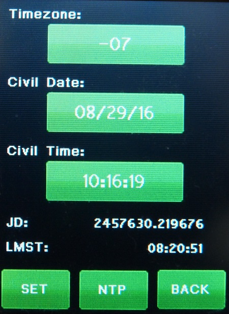

| Interactive Hand-Controller Menus - click on green button to Navigate |
|

New feature called Network Time Protocal or "NTP" for short. It will use an NIST Time Server IP address set into the Web interfaces NETWORK page to get time and date from. You must set this up on the NETWORK WEB Page for this to work. Please read the warning if you intend to use the local computer as the NIST. After setting up the IP address on the Web page, Hitting the "NTP"button will get the time in UTC and Date in UTC, if using a Internet based NIST server (Recommended). It can take up to two seconds for this to happen, but Gemini-2 times will be set to within 1 sec. Also if a valid NIST server address is in the WEB Network page, the Gemini-2 will try and use that to get the current date and time. |
This is the screen where you enter your date and time, and your
time zone offset. The time is entered in local military time format. IE
1.00 PM would be 13:00:00, The date and time will be converted to UTC
time and date internally. Touching on each entry on the screen on the left will take you to the setup/Entry screen for that function. Lets do "Offset", "Date" and then "Time" in that order. Each screen will bring you back here after setting each function. Once all are entered you will come back here and hit the "Set" button and then the "BACK" button. Please Note that the time you set, will not take effect until you hit the "Set" button on this screen. The Time just above the Next button is the calculated Sidereal time. If you would like to make sure it is correct go to https://www.localsiderealtime.com/ and enter your longitude. It will show your sidereal time and you can compare them to make sure everything is correct. Also if you enter the time as UTC time and Date and set the Offset to zero, you will never have to worry about daylight saving time. The mount will work fine this way, anywhere in the world, including at half and quarter time zones. Get UTC TIME from https://time.is/UTC Note: If you are using a GPS receiver. to get the time, then the offset does not matter. The Gemini-2 only uses UTC time for all it's calculations, and a GPS returns UTC time/date only. You can disregard this screen when using a GPS receiver. You can have the hand controller show the correct local time by setting the TimeZone Correctly (include DST if active in your time zone.) If you set TimeZone to zero then the time shown will be UTC. However, if your time zone offset is not correct, then the Gemini-2 will show a wrong Local time and date. This really does not throw off any calculations of the sky position calculations, as long as the time was set with the GPS. |